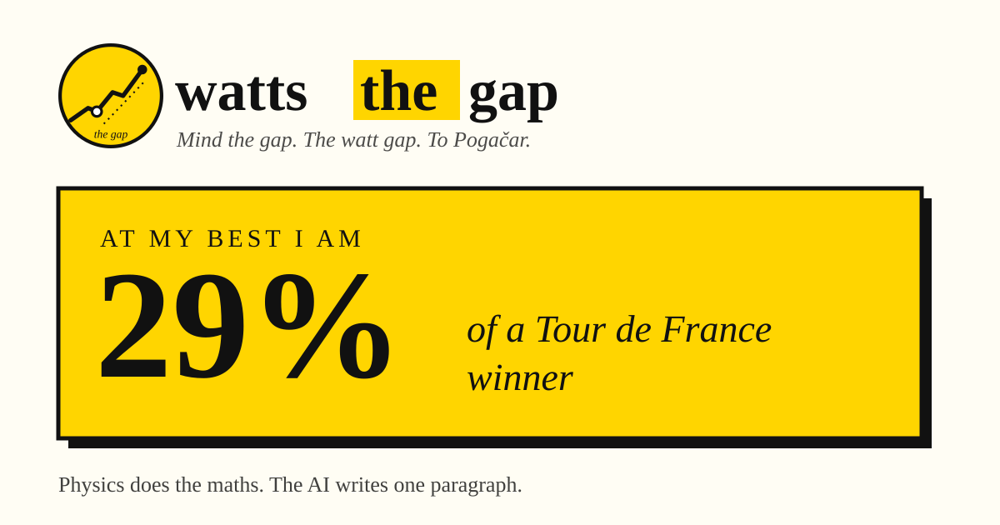

The app · 01
wattsthegap.
There is nothing to host: every run writes one self-contained page and one share card. Below is that page, exactly as the app published it. Not a screenshot, the actual file.

The app · 01
There is nothing to host: every run writes one self-contained page and one share card. Below is that page, exactly as the app published it. Not a screenshot, the actual file.
